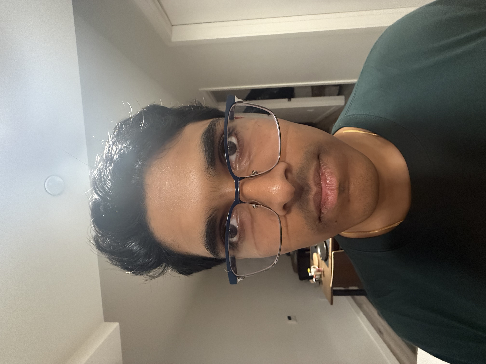
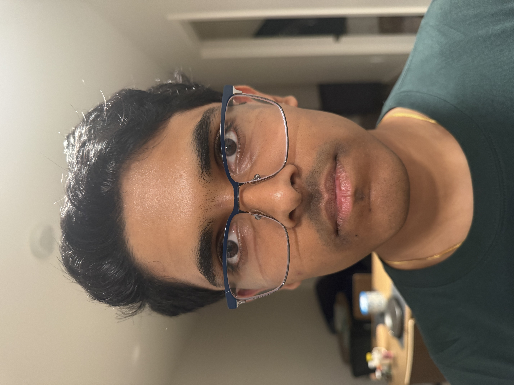
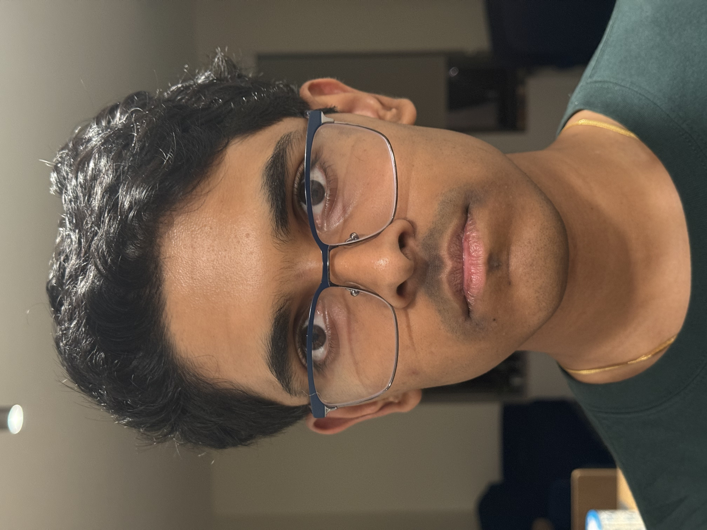
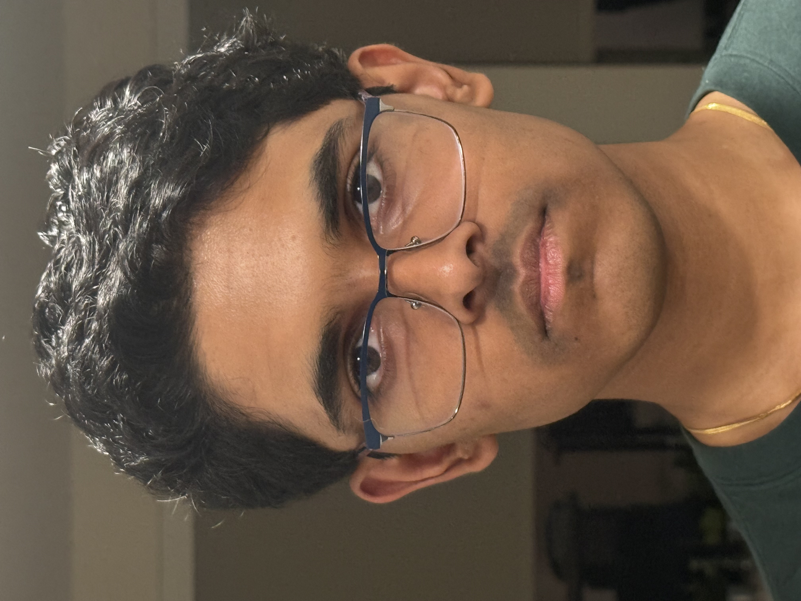
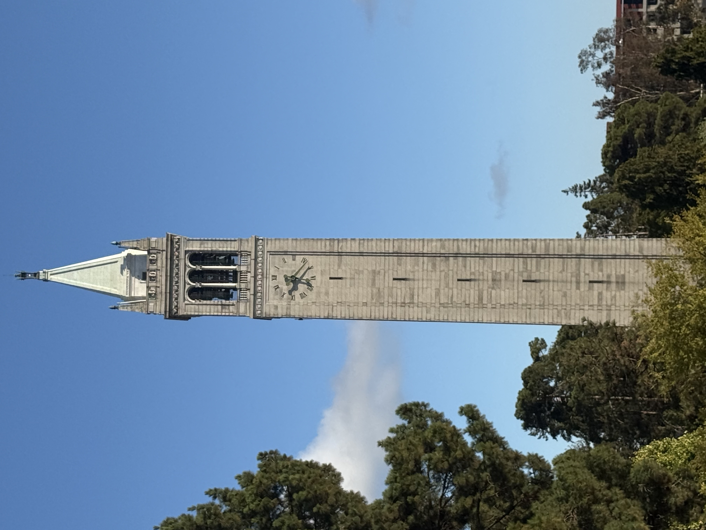
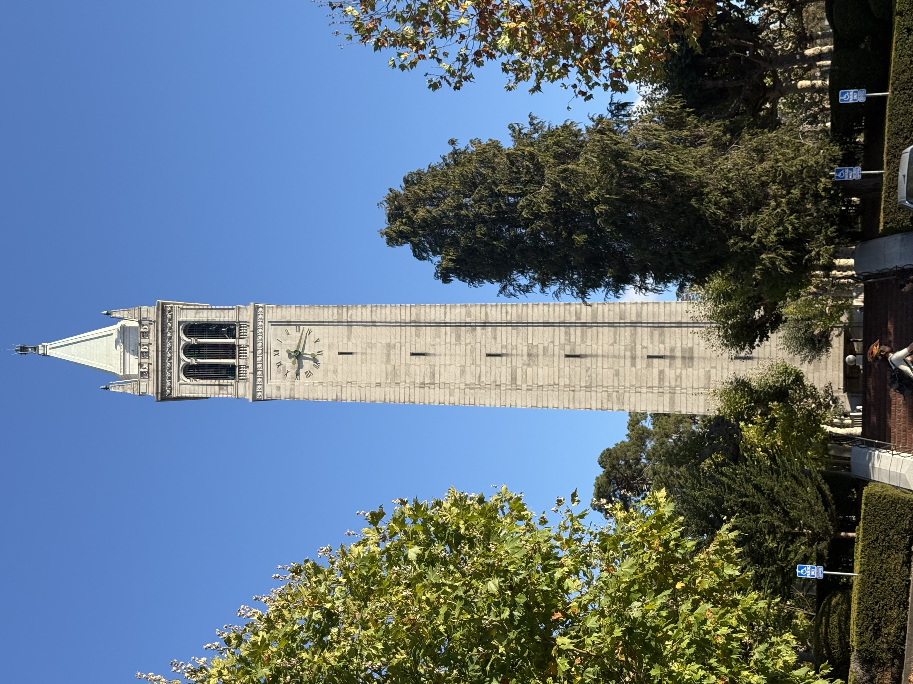

The wrong way vs. the right way




Observation. The earlier photos taken with lower zoom and at a closer distance look funny because the relative size and spread of my facial features look different than they would ordinarily: my face looks a lot thinner, my eyes are pointing in different directions, and I seem to have lost my ears.
Architectural perspective compression


Observation. The more distant photo looks blurrier and less detailed than the nearer photo. I think that this is because the added distance in the first photo adds more opportunities for the photons bouncing off the Campanile to scatter, resulting in a lower density of photons reaching my camera.
The dolly zoom
Observation. This is a Dolly Zoom of a honey bear I keep on me in case I ever run into Oski.